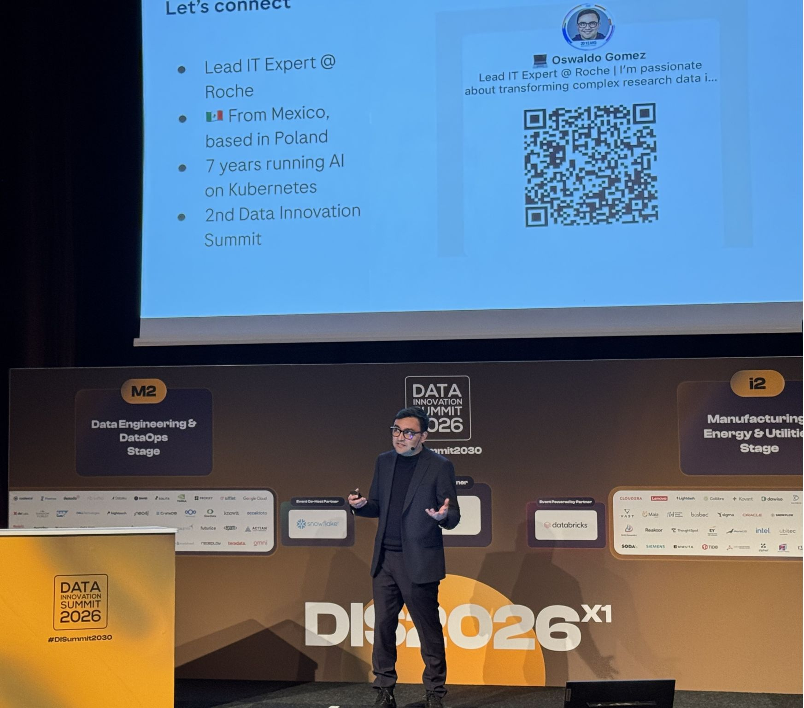
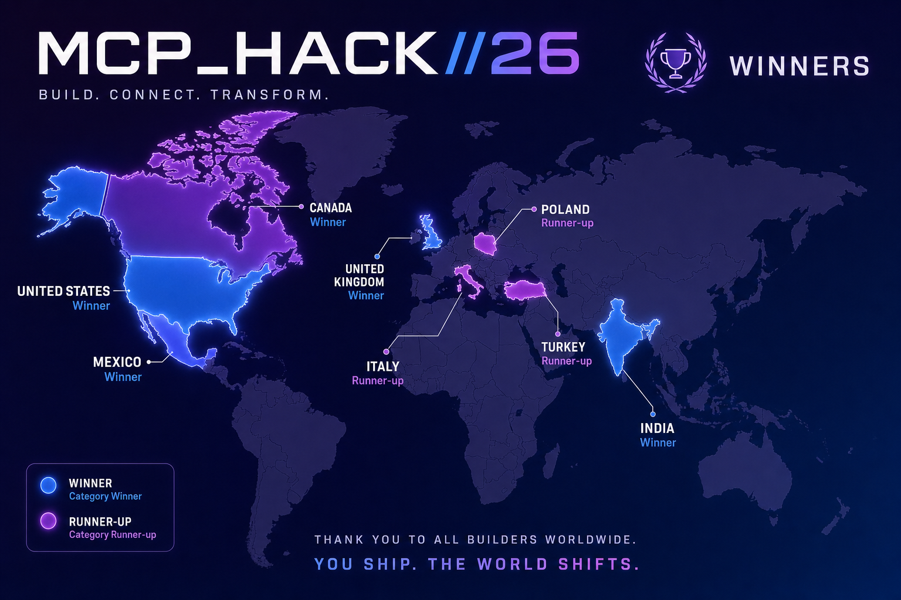

Who's talking
Lead IT Expert, pRED MLOps — Roche · Poznań, Poland

Data Innovation Summit 2026
I keep machine learning running in production: four Kubernetes clusters across sandbox, dev, UAT and production, billions of predictions a year, and a multi-agent AI system a few hundred researchers depend on.
Physics at UNAM, then an MSc in Data Science. Getting any of this to production grade is the hard part — and I learned that on the job, starting at S&P Global.
The path
2012 — 2017
Mexico City
BSc Physics — quantum optics and computational physics. Teaching assistant for five years.
2016 — 2018
Querétaro
Full-stack developer, then data scientist. The first things I built that other people depended on.
2018 — 2019
Mexico City
Senior Data Analyst, Structured Finance LATAM. Turning unstructured sources into data people could actually use.
2019 — 2021
AI Engineering
Machine Learning Engineer — production AI pipelines on Kubernetes, and architecture review for S&P's AI systems.
2021 — now
Poznań, Poland
MLOps engineer → Lead IT Expert, pRED. Multi-agent AI in production, and clusters that have to stay up.
The shift
The difference isn't intelligence. It's whether anything happens when the model finishes thinking.
Anatomy
A model on its own is a reasoning engine. Four things around it turn it into an agent.
Planning
Breaks a goal into steps, and re-plans when a step fails.
Memory
Keeps what happened, so step nine knows about step two.
Instructions
The system prompt. Identity, scope, and the rules it won't cross.
Tools
The hands. Everything the agent can reach outside itself.
The bottleneck
Every model needs a bespoke connector to every tool. Five models and five systems is twenty-five integrations to build, and twenty-five to maintain.
The protocol
One open standard between models and systems. Build a tool once, and every MCP-compliant agent can use it. N × M collapses to N + M.
Primitives
Tools — the verbs
Functions the model can invoke: k8s_delete_resource,
execute_query.
Model-controlled. The agent chooses when to call them — which is exactly why some of them need a gate.
Resources — the nouns
Read-only data the server exposes: file://logs,
db://users/orders.
Application-controlled. Context handed to the agent, not fetched by it.
Prompts — the templates
Reusable, structured instructions and workflows.
User-controlled. Guidelines for how a person wants the model to work with this server.
Reality check
On a laptop
$ python my_agent.py > Agent initialized. > Local context loaded. > Ready. # works perfectly. # nobody else can use it. # nobody can audit it.
In an enterprise
Identity
Who is this agent acting as?
RBAC
What is it permitted to touch?
Tracing
What did it do, and why?
Cost
Who pays for it while it idles?
The infrastructure
A CNCF Sandbox project from the founders of Istio. An agent stops being a script and becomes a resource the cluster manages.
What you already ship
apiVersion: apps/v1 kind: Deployment metadata: name: payments-api spec: replicas: 3 template: spec: containers: - image: payments:1.4
What you ship now
apiVersion: kagent.dev/v1alpha2 kind: Agent metadata: name: clinical-ops-agent spec: declarative: modelConfig: default-model-config tools: - mcpServer: {...}
Architecture
Three separable concerns. Change any one of them without touching the other two.
ModelConfig
Abstracts the provider — OpenAI, Anthropic, a local Ollama. Swapping the brain is a one-line YAML change.
Agent CRD
Identity, instructions, and the exact list of tools this agent is allowed to reach.
MCP tool servers
Kubernetes actions and enterprise APIs, mapped into the agent's environment as callable tools.
Governance
Autonomy you can defend to an auditor: the agent proposes, the platform pauses, a person decides.
get.The runtime
Theory into practice
Built during the kagent hackathon, then rebuilt properly for this talk.
A federated MCP platform on Kubernetes: clinical data from a server I contribute to but don't own, Kubernetes tooling from kagent, and a service catalog — all behind a single endpoint, deployed by GitOps.
The point isn't the score.
It's that none of the interesting pieces were written by the same team — and it still assembles into one governed agent that a non-engineer can drive from a chat window.
MCP_HACK//26

Eight countries on the board.
The runner-up marker over Poland is this project — I've lived in Poznań for five years.
The winner's marker over Mexico is someone else. Also Mexican. I'm from Mexico City.
On that map, I'm both.
Setting it up
In a terminal
export OPENAI_API_KEY=sk-... make create # cluster, ArgoCD, kagent, # m3, gateway, registry make ports # port-forwards
.mcp.json — committed to the repo
{
"mcpServers": {
"mcp-clinical-platform": {
"type": "http",
"url": "http://localhost:4000/mcp"
}
}
}
make demo.
Proving an agent can drive a governed platform with a shell script would defeat the point.The demo
Watch for
Live · prompt 1
The server answering this is m3, built by researchers at MIT. I met its author at a healthcare datathon in Poland I helped organise, on the core team. I didn't fork the project or rebuild it — I contributed the change that made it deployable here, upstream, and then connected to it.
What happens
Real numbers, immediately. Nobody is asked for permission.
What it proves
This is a pre-reviewed tool — a human wrote and checked that query before it ever shipped. Running ungated is a decision, not an oversight.
Steal Like an Artist — Austin Kleon, a book Patrick Harrison put on the AI Engineering reading list at S&P. It stuck. · github.com/rafiattrach/m3 · healthcare-datathon.pl
Live · prompt 2
No pre-built answer exists for this one, so the agent has to write its own query — against patient records.
What happens
It reads the schema, writes SQL — and stops. Nothing runs. The request
waits at localhost:8090 with the
exact query on screen to read first.
What it proves
Nothing here was destructive — it's a read. It paused because a language model wrote a query against patient records thirty seconds ago and nobody had looked at it yet.
The takeaway
Layer 1
MCP
Standardises tool discovery and execution. Resolves the integration bottleneck.
Layer 2
kagent
Brings agents to Kubernetes. Resolves orchestration, GitOps and human-in-the-loop governance.
Layer 3
Agent Substrate
Delivers serverless economics via gVisor checkpointing. Resolves idle compute waste.
Take it with you
References
Al Attrach, R., Moreira, P., Fani, R., Umeton, R., & Celi, L. A. (2025). Conversational LLMs simplify secure clinical data access, understanding, and analysis. arXiv. https://doi.org/10.48550/arXiv.2507.01053
Anthropic. (n.d.). Model Context Protocol. Retrieved August 28, 2026, from https://modelcontextprotocol.io
Gómez, O. (2026a). mcp-clinical-platform [Computer software]. GitHub. https://github.com/papagala/mcp-clinical-platform
Gómez, O. (2026b, March 23). Roche's Kubeflow story: Large models in seconds, costs cut, security up with Bottlerocket [Lightning talk]. CNCF-Hosted Co-located Events Europe 2026, Amsterdam, Netherlands. https://colocatedeventseu2026.sched.com/speaker/oswaldo12
Healthcare Datathon Poland. (n.d.). Healthcare Datathon. Retrieved August 28, 2026, from https://www.healthcare-datathon.pl
Johnson, A., Bulgarelli, L., Pollard, T., Horng, S., Celi, L. A., & Mark, R. (2023). MIMIC-IV clinical database demo (Version 2.2). PhysioNet. https://doi.org/10.13026/dp1f-ex47
Kleon, A. (2012). Steal like an artist: 10 things nobody told you about being creative. Workman Publishing.
Koletou, E., Mu, L., Stoyanova, R., Gomez Muñoz, J. O., … Chabbert, C. (2026). From research to impact: A comprehensive platform for AI model deployment in drug discovery. Artificial Intelligence in the Life Sciences, 9, 100171. https://doi.org/10.1016/j.ailsci.2026.100171
Solo.io. (n.d.). agentgateway [Computer software]. Retrieved August 28, 2026, from https://agentgateway.dev
Solo.io. (n.d.). kagent [Computer software]. Retrieved August 28, 2026, from https://kagent.dev
Solo.io. (2026). Celebrating the winners of the 2026 hackathon for MCP AI agents. https://www.solo.io/blog/celebrating-the-winners-of-the-2026-hackathon-for-mcp-ai-agents